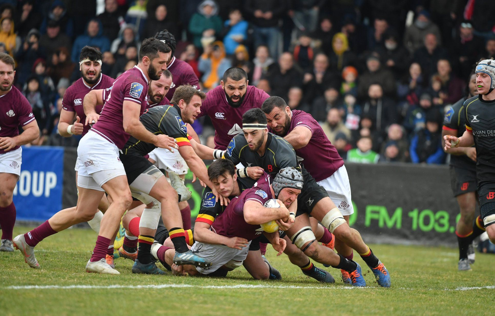

Georgian Rugby Team
The Georgia national rugby union team (Georgian: საქართველოს მორაგბეთა ეროვნული ნაკრები) represents Georgia in men's international rugby union nicknamed The Lelos, it's administered by the Georgian Rugby Union. The team takes part in the annual Rugby Europe Championship (previously named European Nations Cup) and participates in the Rugby World Cup, which takes place every four years.